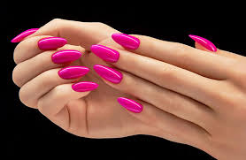
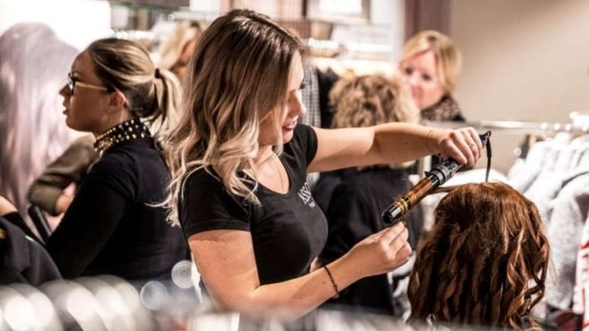
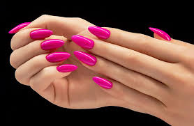
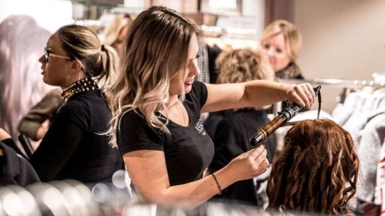

Peluquería
Brindamos un servicio integral de peluquería, nos enfocamos en tratamientos reconstructivos del cabello como la keratina, bótox, alisados, etc.
 



Brindamos un servicio integral de peluquería, nos enfocamos en tratamientos reconstructivos del cabello como la keratina, bótox, alisados, etc.
¿Qué es la manicura semipermanente? La manicura semipermanente es un esmaltado de secado inmediato y de larga duración que mantiene un resultado reluciente. Este efecto se consigue con la aplicación de esmaltes específicos y el secado de las uñas en una luz UV o LED.
La depilación española es uno de los métodos de depilación más efectivos que existen en la actualidad. En esta se utiliza una cera caliente hecha a base de resina de pino y miel, ingredientes que evitan que la piel se irrite y que se encargan de dejarla suave y brillante.
¿EN QUÉ CONSISTE LA PEDICURA COMPLETA? Es un tratamiento completo de uñas y pies. Comenzamos con la limpieza de los pies, sumergiéndolos en un baño de agua y jabón. Seguidamente eliminamos las durezas, cortamos las uñas si fuese necesario y empujamos las cutículas, para acabar limando las uñas.